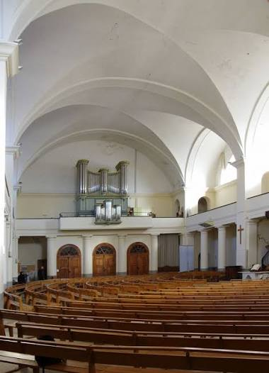

Temples
Protestants
des Cévennes


⟹ Patrimoine protestant ⟸
Une terre profondément marquée par la Réforme. Le protestantisme s’implante tôt dans les Cévennes, dès les années 1530-1560, porté par des marchands, des artisans et des prédicateurs venus de Genève. Anduze, surnommée « la petite Genève des Cévennes », devient l’un de ses principaux foyers. En quelques décennies, une grande partie des vallées cévenoles adhère à la foi réformée.
Le temple, une maison de la Parole. Pour les réformés, le temple n’est pas un lieu sacré mais un espace de rassemblement où l’on écoute la Bible, prêche et chante les psaumes. Cette conception explique la simplicité des bâtiments : pas d’autel, pas d’images, pas de statues, mais une chaire placée au centre de l’attention des fidèles.

De l’édit de Nantes à la paix d’Alès. L’édit de Nantes de 1598 autorise le culte réformé dans des lieux déterminés, et de nombreux temples sont alors édifiés. Après les révoltes protestantes menées par le duc de Rohan, la paix d’Alès de 1629 prive les réformés de leurs places fortes mais maintient la liberté de culte.
La destruction des temples. Dès les années 1660, le pouvoir royal restreint l’application de l’édit de Nantes et fait démolir de nombreux temples. Après la révocation de 1685, tous les temples encore debout sont détruits ou confisqués. Il ne reste presque rien des temples cévenols du XVIIe siècle.
Le temps du Désert. Le culte devient clandestin. Les assemblées se tiennent la nuit, en pleine nature, dans des combes, des bois ou des grottes, sous la conduite de prédicateurs itinérants. Ces lieux de rassemblement discrets, parfois encore identifiables dans le paysage, forment un autre patrimoine, invisible, de la foi cévenole.
La révolte des Camisards. Entre 1702 et 1704, les Cévennes sont le théâtre de la guerre des Camisards, insurrection protestante contre les persécutions. La répression est terrible : lors du « grand brûlement » de 1703, de nombreux villages des hautes Cévennes sont incendiés et vidés de leurs habitants.
La réorganisation clandestine. À partir de 1715, le pasteur Antoine Court réorganise les Églises réformées en rétablissant synodes, consistoires et formation des pasteurs, en grande partie à Lausanne. Les communautés reprennent une vie structurée, même si le culte reste interdit.
Le retour à la légalité. L’édit de Tolérance de 1787 rend un état civil aux protestants, puis la Révolution leur accorde la liberté de conscience et de culte. En 1802, les Articles organiques reconnaissent officiellement l’Église réformée, dont les pasteurs sont désormais rémunérés par l’État.
Le grand siècle des temples. Au XIXe siècle, les communautés cévenoles reconstruisent ou édifient la plupart des temples que l’on voit aujourd’hui. Beaucoup sont bâtis dans les décennies qui suivent 1815, souvent à l’emplacement ou près des anciens lieux de culte, grâce aux dons des fidèles et parfois à l’aide des communes.
Le temple d’Anduze. Achevé en 1823, le temple d’Anduze est l’un des plus vastes de France. Sa façade néoclassique à colonnes et son immense volume intérieur, qui peut accueillir plus d’un millier de fidèles, témoignent de la vitalité et de la fierté retrouvée de la communauté protestante au lendemain de la Restauration.
Une architecture de la sobriété. Les temples cévenols présentent le plus souvent un plan rectangulaire simple, des murs blancs, de grandes fenêtres et des tribunes pour accueillir l’assemblée. Le mobilier se limite à la chaire, à la table de communion et aux bancs, auxquels s’ajoutent parfois un orgue ou un harmonium. Des versets bibliques peints sur les murs remplacent les images.
Les signes de la mémoire protestante. Certains temples conservent des éléments rappelant la période des persécutions : chaires portatives, méreaux, bibles anciennes, plaques commémoratives. La croix huguenote, bijou apparu à la fin du XVIIe siècle et traditionnellement attribué à un orfèvre nîmois, est devenue l’emblème le plus répandu de cette identité.
Un réseau patrimonial. Les temples d’Anduze, Mialet, Saint-Jean-du-Gard, Génolhac, Euzet, Corbès, Tornac, Bagard, Brignon et de nombreuses autres communes forment un patrimoine religieux dense. Du côté de la Lozère, ceux de Florac ou du Pont-de-Montvert prolongent ce réseau jusqu’aux hautes Cévennes.
De 1905 à aujourd’hui. Après la loi de séparation des Églises et de l’État de 1905, les temples passent sous la responsabilité des associations cultuelles ou des communes selon leur histoire. La plupart accueillent toujours un culte, notamment au sein de l’Église protestante unie de France, créée en 2013, et certains servent aussi de lieux de concerts ou d’expositions.
Pourquoi parle-t-on du « Désert » ?. Dans la mémoire protestante française, le Désert désigne surtout la période pendant laquelle le culte réformé, interdit après 1685, se maintient clandestinement. Le mot renvoie au récit biblique de l’Exode : il évoque l’épreuve, l’errance et l’espérance. Les assemblées n’avaient pas toutes lieu dans des paysages désertiques : elles se réunissaient dans des bois, des vallées, des maisons ou des lieux isolés.
Une géographie de refuges et de communications. Les vallées, les chemins muletiers, les mas dispersés et les reliefs cévenols ont facilité la circulation des prédicants, des messagers et des fidèles. Ils n’assuraient cependant aucune sécurité absolue : la répression pouvait frapper les familles, les villages et les personnes soupçonnées d’avoir accueilli une assemblée.
Les femmes et la transmission de la foi. La vie religieuse clandestine reposait aussi sur les familles et les femmes, qui transmettaient les psaumes, les récits bibliques et les pratiques de prière. Certaines furent arrêtées pour avoir participé à des assemblées interdites ; l’emprisonnement de protestantes à la tour de Constance illustre cette dimension souvent moins visible de l’histoire du Désert.
Les Camisards et leurs chefs. La guerre des Camisards ne se réduit pas à un affrontement entre deux armées régulières. Elle met en jeu des groupes mobiles, des soutiens villageois et une forte dimension prophétique. Jean Cavalier et Pierre Laporte, dit Rolland, figurent parmi ses principaux chefs ; les combats, les représailles et les destructions ont profondément marqué les communautés cévenoles.
L’architecture intérieure et l’écoute. La disposition des bancs et des tribunes privilégie la visibilité de la chaire et l’intelligibilité de la prédication. Selon la taille et les moyens des communautés, les temples peuvent être de modestes salles de village ou de grands édifices néoclassiques. Leur sobriété n’exclut ni le soin apporté à l’acoustique, ni les décors de menuiserie, ni les inscriptions bibliques.
Le XIXe siècle : reconstruction et diversité. Le rétablissement du culte public favorise la construction de temples adaptés à des assemblées parfois nombreuses. Les projets dépendent des ressources locales, des dons, des choix architecturaux et des relations avec les municipalités. Les bâtiments actuels sont donc rarement des vestiges directs des temples détruits au XVIIe siècle : ils témoignent surtout de la reconstruction religieuse du XIXe siècle.
Le Musée du Désert et la mémoire des assemblées. Au Mas Soubeyran, à Mialet, dans la maison natale du chef camisard Rolland, le Musée du Désert présente documents, objets, bibles et témoignages liés aux persécutions, à la clandestinité et à la guerre des Camisards. Il permet de replacer les temples actuels dans l’histoire plus vaste des communautés qui les ont édifiés. Site du Musée du Désert ↗.
Préserver un patrimoine vivant. La conservation des temples concerne à la fois les maçonneries, les charpentes, les orgues, les archives paroissiales et les objets du culte. Leur valeur ne tient pas uniquement à leur ancienneté : ils demeurent, pour nombre de villages, des lieux de rassemblement, de mémoire familiale et de transmission de l’histoire locale.
Une mémoire inscrite dans le paysage. Avec le Musée du Désert, la tour de Constance et les lieux d’assemblées clandestines, les temples des Cévennes racontent l’histoire longue d’une minorité religieuse qui a traversé persécutions, clandestinité et reconquête de sa liberté. Leur silhouette discrète fait partie intégrante de l’identité cévenole.